<!DOCTYPE html>
<html lang="en">
  <head>
    <meta charset="UTF-8" />
    <meta http-equiv="X-UA-Compatible" content="IE=edge" />
    <meta name="viewport" content="width=device-width, initial-scale=1.0" />
    <title>Friendhip App</title>
    <!-- font-awesome -->
    <link
      href="https://fonts.googleapis.com/css2?family=Poppins:wght@400;500;600;700&display=swap"
      rel="stylesheet"
    />
    <link
      rel="stylesheet"
      href="https://cdnjs.cloudflare.com/ajax/libs/font-awesome/5.14.0/css/all.min.css"
    />
    <!-- styles -->
    <link rel="stylesheet" href="styles.css" />
    <!-- favicon -->
    <link
      rel="apple-touch-icon"
      sizes="180x180"
      href="./favicon_package_v0.16/apple-touch-icon.png"
    />
    <link
      rel="icon"
      type="image/png"
      sizes="32x32"
      href="./favicon_package_v0.16/favicon-32x32.png"
    />
    <link
      rel="icon"
      type="image/png"
      sizes="16x16"
      href="./favicon_package_v0.16/favicon-16x16.png"
    />
    <link rel="manifest" href="./favicon_package_v0.16/site.webmanifest" />
    <link
      rel="mask-icon"
      href="./favicon_package_v0.16/safari-pinned-tab.svg"
      color="#5bbad5"
    />
    <meta name="msapplication-TileColor" content="#da532c" />
    <meta name="theme-color" content="#ffffff" />
  </head>
</html>
<!-- Google tag (gtag.js) -->
<script
  async
  src="https://www.googletagmanager.com/gtag/js?id=G-79PXR1PTHK"
></script>
<script>
  window.dataLayer = window.dataLayer || [];
  function gtag() {
    dataLayer.push(arguments);
  }
  gtag("js", new Date());

  gtag("config", "G-79PXR1PTHK");
</script>
<body>
  <nav id="nav">
    <div class="nav-center">
      <!-- nav header -->
      <div class="nav-header" id="friendapp-top">
        <a href="index.html">
          
        </a>
        <!-- menu for smaller devices -->
        <button class="nav-toggle">
          <i class="fas fa-bars"></i>
        </button>
      </div>
      <!-- links -->
      <div class="links-container">
        <ul class="links">
          <li>
            <a href="about.html">about me</a>
          </li>
          <li>
            <a href="index.html">projects</a>
          </li>
        </ul>
      </div>
      <!-- contact button -->
      <a
        href="mailto:valborzykina@gmail.com?subject=Hi!"
        class="btn btn-contact"
      >
        contact
      </a>
    </div>
  </nav>
  <div
    class="projects-banner"
    style="background-image: url(./img/friendship720@2x.png)"
  ></div>
  <div class="main">
    <div class="main-center">
      <section class="decription">
        <h2>Friendship App</h2>
        <div class="project-spec">
          <p class="table-title">date</p>
          <p>June 2021</p>

          <p class="table-title">my role</p>
          <p>Solo UX/UI Designer</p>
          <p class="table-title">deliverables</p>
          <div class="deliverables">
            <p class="p-bg-deliv">Competitive Analysis</p>
            <p class="p-bg-deliv">User Journey</p>
            <p class="p-bg-deliv">Wireframes</p>
            <p class="p-bg-deliv">Persona</p>
            <p class="p-bg-deliv">Usability testing</p>
            <p class="p-bg-deliv">Affinity Diagram</p>
            <p class="p-bg-deliv">Moderated Interviews</p>
            <p class="p-bg-deliv">Problem Statement</p>
            <p class="p-bg-deliv">How Might We Technique</p>
            <p class="p-bg-deliv">Hi-fi mockup</p>
          </div>
          <p class="table-title">platform</p>
          <p>Android</p>
        </div>
      </section>
      <section class="project-flow">
        <article>
          <h3>Description</h3>
          <div class="text-column-container">
            <div class="part-1">
              <h4>Problem</h4>
              <p>
                With the growing number of single people, social support and
                connections are becoming increasingly important for health and
                emotional welfare. It is especially challenging for young adults
                to find friends after finishing their studies.
              </p>
            </div>
            <div class="part-2">
              <h4>Project Goal</h4>
              <p>
                MVP prototype for an engaging product that addresses the social
                needs of younger population by connecting people online based on
                shared interests, views and common goals.
              </p>
            </div>
            <div class="part-3">
              <h4>Target Audience</h4>
              <p>
                Young adults (23-35) who have time and interest to build and
                cultivate online relationships with the primary focus on the
                female audience.
              </p>
            </div>
            <div class="part-4">
              <h4>Approach</h4>
              <p>
                The human-centered Design Thinking process helped me stay on
                track during multiple iterations and make sure that my design
                decisions were supported by user feedback.
              </p>
            </div>
          </div>
        </article>

        <section>
          <article>
            <h3>Empathise</h3>
            <div class="two-column-article text-column-container">
              <div class="article-left">
                <h4>Google Trends</h4>
                <p>
                  Google Trends show a somewhat bumpy yet stable interest in the
                  search query "make friends" over the last ten years. The
                  upward general trend predicts a further growing demand in the
                  nearest future.
                </p>
              </div>
              <div class="article-column-right">
                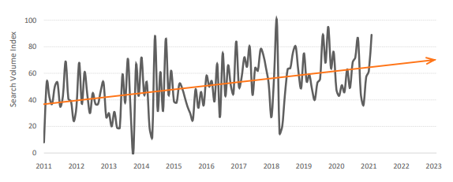
              </div>
            </div>
          </article>
          <article>
            <h4>Desk Research Findings</h4>
            <p class="short-text">
              Each user persona has a somewhat similar yet recognizable journey
              patterns. Both user journeys reveal that the three first steps are
              crucial as they are relevant for all users. The forth step is
              nonetheless equally important as it provides each user groups with
              the main functionality, required to reach their goals.
            </p>
            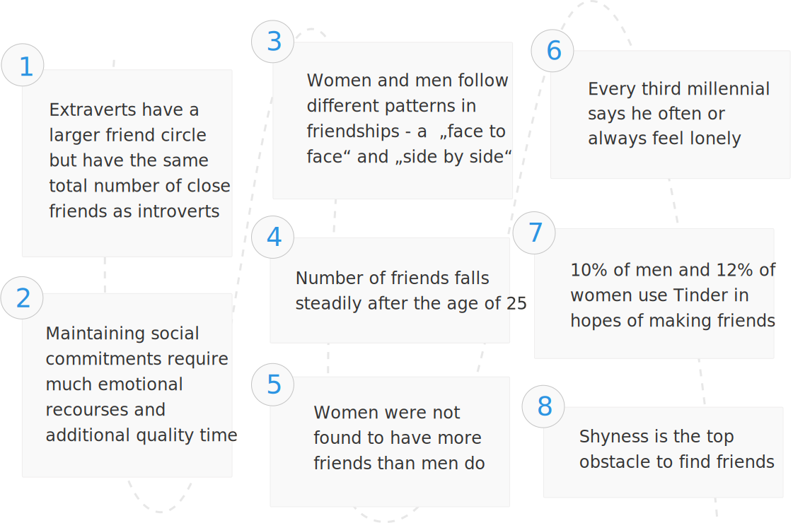
          </article>
          <article>
            <div class="text-column-container">
              <div>
                <h4>Interviewing</h4>
                <p>
                  When I had a clearer picture of the target audience, I decided
                  to check my insights and see if and what troubles the target
                  group experiences when it comes to friendships. So I conducted
                  three semi-structured interviews with target users based on
                  their demographics and goals.
                </p>
              </div>
              <div>
                <h4>Approach</h4>
                <p>
                  Questions were organized into three categories: kickoff
                  questions, online experience, and friendships in real life.
                  During the interviews, I used the 5 whys tactic, avoided any
                  leading questions and asked about past (best, worst, last)
                  experience instead.
                </p>
              </div>
            </div>
            <div class="text-column-container blue-bg">
              <div>
                <p>
                  It was inspiring to hear that the interview participants were
                  excited about the idea of seeking new ways to bring people
                  together:
                </p>
              </div>
              <div>
                <p class="italic-style">
                  “Friendship apps are needed for anyone like me – over 25 years
                  old”
                </p>
                <p class="italic-style">
                  “It is really sad there is no friendship apps out there.
                  Single or not, you still need friends”
                </p>
                <p class="italic-style">
                  "I don't know any friendship apps. It's really sad. Meeting
                  people at work is the only chance"
                </p>
              </div>
            </div>
          </article>
          <article>
            <h4>Affinity Diagram</h4>
            <p class="short-text">
              After thematical analysis of the interview transcriptions, I
              visualized all the gathered information via an affinity map to
              find relationships between the data pieces. Based on the
              connections, I then grouped the dataset into larger themes.
            </p>
            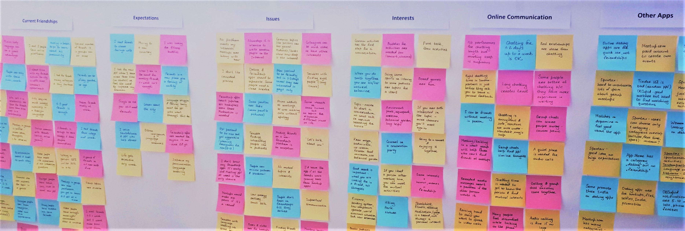
          </article>
          <article>
            <h4>Interview insights</h4>
            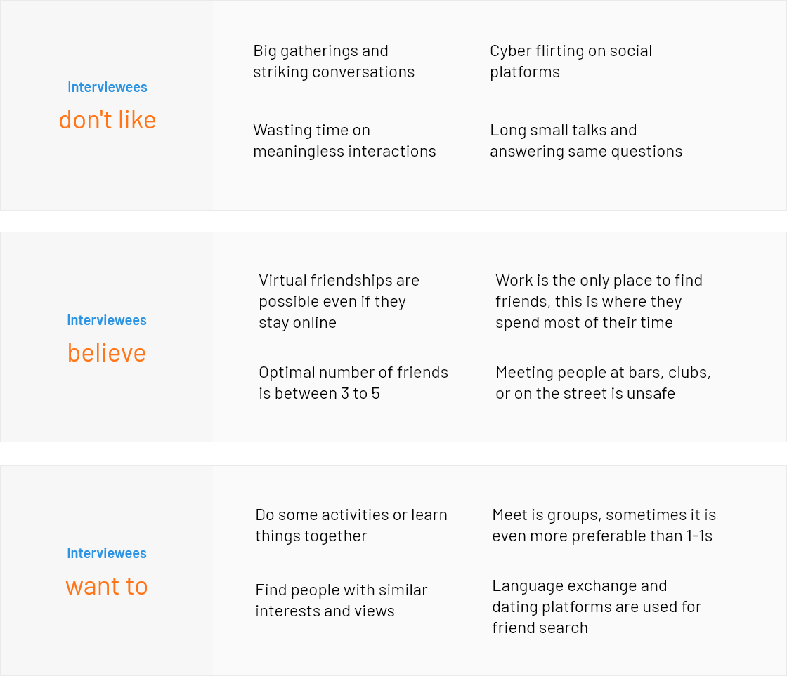
          </article>
          <article>
            <h4>Persona</h4>
            <p class="short-text">
              I compiled the  insights from the interviews in a user persona to
              have a more coherent understanding of the primary user type.
            </p>
            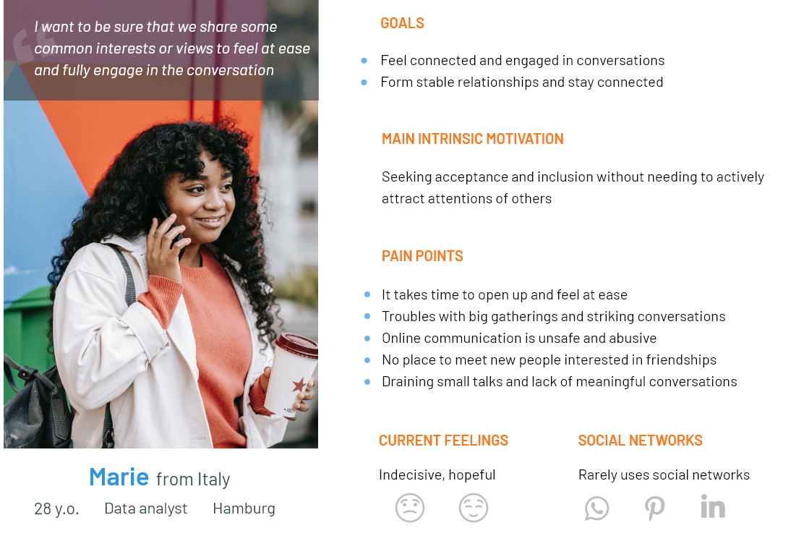
          </article>
          <article>
            <h4>User Journey</h4>
            <p class="short-text">
              To better understand Marie's expereince, I mapped her entire
              journey starting with the moment when she realizes she wants to
              find friends.
            </p>
            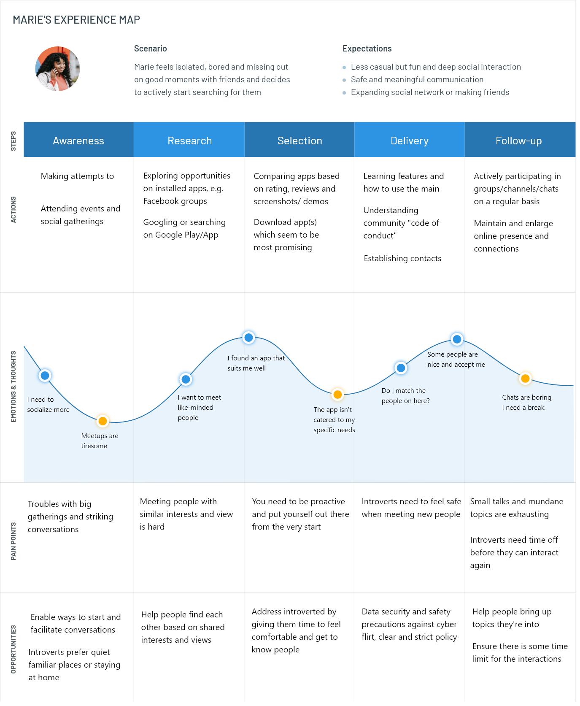
          </article>
          <article>
            <h3>Define</h3>
            <h4>Problem Statement</h4>
            <p class="short-text">
              Before jumping straight into the ideation phase, I reviewed all
              collected data to articulate the design challenge. It will help me
              reveal gaps in the unmet user needs and start opening up for new
              ideas.
            </p>
            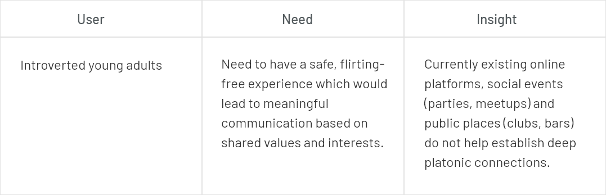
          </article>
          <article>
            <h4>How might we</h4>
            <p class="short-text">
              Using How might we technique, I broke down the problem statement
              into questions to start opening up ideas and opportunities to
              solve the challenge.
            </p>
            <ul class="list-style">
              <li>
                To get awards that bring users together and show the progress
                they have made as a team
              </li>
              <li>To expand social circle and learn new skills</li>
              <li>To enjoy a flirting free communication</li>
              <li>
                To organize meetings with Todo's which bring order and time
                constraints into get-togethers
              </li>
              <li>
                To create own groups or join group events based on interests and
                passions
              </li>
            </ul>
          </article>
          <article>
            <h3>Ideate</h3>
            <p class="short-text">
              Quite unexpectedly for myself I ended up with a solution which did
              not aim at making friends specifically. It was more of a mobile
              learning platform where people could look for learning buddies or
              join small study groups and thus make new contacts and
              simultaneously develop skills or passions that can bring them
              together.
            </p>
            <h4>Why AN App?</h4>
            <p class="short-text">
              I revisited the pain point section in the user journey map and
              made sure that my design idea was aligned with the troubles users
              experienced.
            </p>
            <p class="short-text">
              The interviewees' responses clearly indicated that young adults
              use social media mostly on their phones for checking messages and
              new events.
            </p>
            <p class="short-text">
              Moreover, introverted people prefer the feeling of safety, staying
              at home and try to avoid the pressure of instant in-person
              communication.
            </p>
            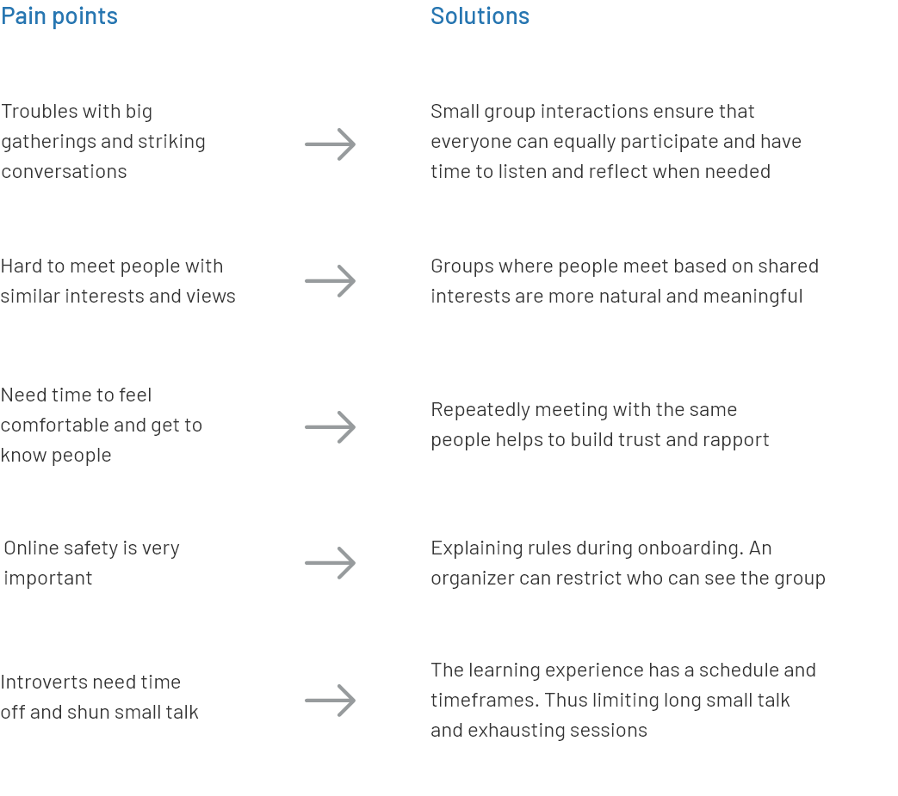
          </article>
          <article>
            <h4>Competitive analysis</h4>
            <div class="text-column-container">
              <div>
                <p>
                  I then checked whether a similar solution was already
                  available for users but could not find any direct competitor.
                  Yet plenty platforms build their products around the idea of
                  connecting people and expanding networks.
                </p>
              </div>
              <div>
                <p>
                  I chose 3 famous social networks (Facebook, Meetup and
                  OkCupid) and 3 new platforms (Panin, Patook and Tandem
                  Language Exchange) to examine them on functionality, safety
                  and usability.
                </p>
              </div>
            </div>
            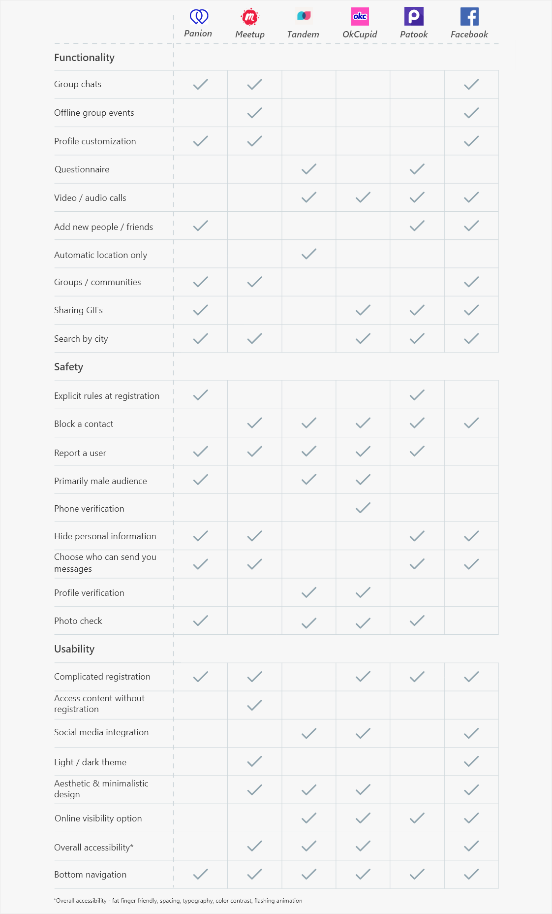
            <div class="text-column-container">
              <div>
                <p>
                  The apps have a wide variety of functionality but only Meetup
                  and Facebook let users organize in-person group events.
                </p>
              </div>
              <div>
                <p>
                  I chose 3 famous social networks (Facebook, Meetup and
                  OkCupid) and 3 new platforms (Panin, Patook and Tandem
                  Language Exchange) to examine them on functionality, safety
                  and usability.
                </p>
              </div>
            </div>
          </article>
          <article>
            <h3>Prototype</h3>
            <h4>Information architecture</h4>
            <p class="short-text">
              The users are experts in chat applications and social networks who
              expect typical UX patterns. To meet the needs of the tech savvy
              audience, the application user flow will follow the established
              mental models which are used on many modern platforms.
            </p>
            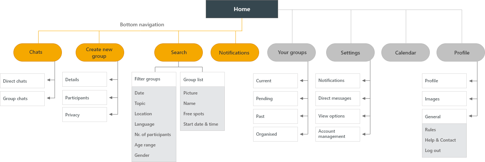
          </article>
          <article>
            <h4>Wireframes</h4>
            <p class="short-text">
              The users are experts in chat applications and social networks who
              expect typical UX patterns. To meet the needs of the tech savvy
              audience, the application user flow will follow the established
              mental models which are used on many modern platforms.
            </p>
            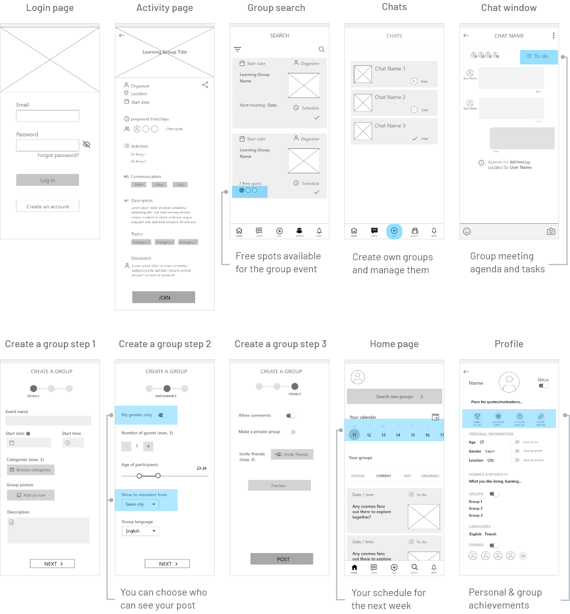
          </article>
          <article>
            <h4>Color & font choice</h4>
            <div class="text-column-container">
              <div>
                <h5 class="row-spacing">Color meaning</h5>
                <p>
                  Bright orange represents friendliness and stimulates mental
                  activity and blue stands for knowledge, understanding. That
                  mirrors the main app idea - making friends while learning.
                </p>
                <h5 class="row-spacing">Accessibility</h5>
                <p>
                  Blue/ orange color combination ensures good color contrast
                  (tested on a color blindness simulator).
                </p>
                <h5 class="row-spacing">Neutral colors</h5>
                <p>
                  The application mainly consists of neutral colors (black,
                  white and gray) to make it aesthetically appealing in
                  combination with any event pictures users might choose as a
                  group picture
                </p>
                <h5 class="row-spacing">Interactions</h5>
                <p>
                  Bright blue colors are used with call-to-action (CAT) buttons,
                  orange with functional and navigation elements to make them
                  stand out and stimulate intuitive interactions within the
                  application.
                </p>
                <h5 class="row-spacing">Typeface</h5>
                <p>
                  Libre Franklin is a modern, playful and elegant typeface. It
                  complements the design style which is in-between fun and
                  friendly chatting yet meaningful communication and enriching
                  learning experience
                </p>
              </div>
              <div>
                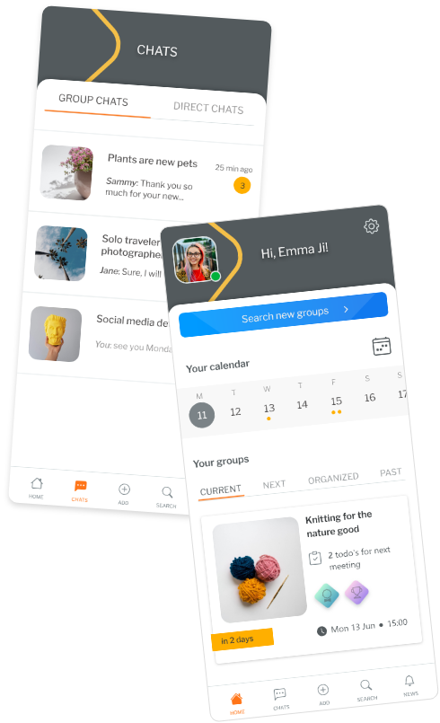
              </div>
            </div>
          </article>
          <article>
            <h3>Testing</h3>
            <h4>Design issues</h4>
            <div class="text-column-container">
              <div>
                <p>
                  Once I was through with the mockups, I conducted three remote
                  moderated usability tests to explore the main functionality
                  issues that may arise during the first use. Although the test
                  participants had almost no trouble navigating the platform,
                  they still pointed out some issues/ inconsistencies that they
                  with.
                </p>
              </div>
              <div>
                <ul class="list-style straight">
                  <li>Lengthy and hard-to-read event titles</li>
                  <li>Available event spots are easy to miss</li>
                  <li>Unclear wording for non-native users</li>
                  <li>Icons are too general and unclear</li>
                  <li>Several redundant fields in the user profile</li>
                  <li>Private chats and group chats mixed together</li>
                  <li>Search as a home page doesn't work for all</li>
                </ul>
              </div>
            </div>
          </article>
          <article>
            <h4>Design Solution</h4>
            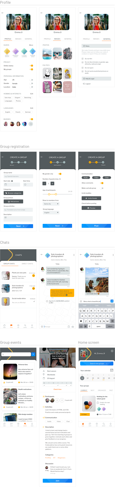
          </article>
          <article>
            <h3>Takeaways</h3>
            <div class="text-column-container">
              <div>
                <p>
                  I used a grayscale prototype to test the user flow and
                  layouts. The lack of visual enhancements backlashed as users
                  gave negative feedback to the design and paid overall much
                  more attention to the UI drawbacks than to product usability.
                  I had to pause usability tests to make all the necessary
                  visual adjustments for the product to feel more real.
                </p>
              </div>
              <div>
                <span> Solution </span>: Next time, I will test low-fidelity
                wireframes only with trained professionals. I will create a
                colorful, elaborately designed and visually appealing prototype
                for testers because they are used to deal with finished products
                only.
              </div>
              <div>
                <p>
                  The application Buddy4 is both a social media and a learning
                  platform. People prefer chatting on their mobile phones but
                  learning things is more comfortable on a bigger screen like a
                  PC or a laptop.
                </p>
              </div>
              <div>
                <span> Solution </span>: Develop later a web version of the
                application so that users could easily share files, watch shared
                content or video chat on larger real estates.
              </div>
            </div>
          </article>
        </section>
      </section>
    </div>
  </div>
  <footer>
    <div class="footer-center">
      <!-- footer header -->
      <div class="footer-header">
        <a href="index.html">
          
        </a>
      </div>

      <!-- social media buttons -->
      <div class="socials">
        <a href="https://www.behance.net/valcheelly" class="circle-btn">
          <div class="circle-icon">
            </div
        ></a>
        <a href="mailto:valborzykina@gmail.com?subject=Hi!" class="circle-btn">
          <div class="circle-icon">
            
          </div>
        </a>
      </div>
      <!-- legal info -->

      <p class="copyright">
        © Copyright <span id="date-footer"></span>. All Rights Reserved
      </p>
    </div>
  </footer>
  <a class="scroll-link top-link" href="#friendapp-top">
    <i class="fas fa-arrow-up"></i>
  </a>
  <!-- javascript -->
  <script type="module" src="nft.js"></script>
</body>
